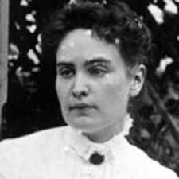

Biography
Anne Sullivan was born in 1866 in a small village in Massachusetts. She had two siblings, Thomas and Alice Sullivan, in which she was the oldest out of the two. Growing up in America was not easy for the Sullivans, starting from the beginning. At the age of 5, Anne Sullivan had an eye disease caused my bacteria in the eye caled,Trachoma. Some symtons of Trachoma are red and swollen eyes, and vision loss caused by recurring irritation and scarring of cornea. Unfortunatley she had to deal with these symtons the rest of her life.
Family Life and Struggles
When Anne Sullivan was only 8 years old, her mother died. Her father, Thomas Sullivan found it difficult to raise his family by himself which led him to soon adbandon his family. Jimmie, her younger brother, and her were then sent to live in the "poor house" in Tewksbury. The "poor house" was overcrowded and in disrepair. The home housed an average of 940 women, men, and children. The mortality rate was high and within 3 months of being there, Jimmie died. Anne Sullivan griefed for a while after his death and felt the loss deeply.
When Her Life Truly Began
People felt pity for her after her brother died and gave her opportunities to improve. Ways to improve included: eye operations that gave her limited, short-term relief, and taking a trial position as a housemaid that ended unsuccessfully. While she sayed at Tewksbury, she learned from a blind resident that there were schools for blind children. Since she hoped to get an education, going to one of those schools was the main focus of her life.
In 1880, the commission went to investigate the conditions at Tewksbury Almshouse. At the end of the visit Anne asked them if she could go to school. Later, on October 7, 1880, she entered the Perkins Institution which was a school for the blind.
Her Time at Perkins
When she first got to Perkins, Anne had a hard time adjusting. She felt humiliated about her own shortcomings and her anger and shame fueled a determination to excel in her studies. After the first two years she adjusted at it got easier. She had another surgery on her eyes which allowed her to read print better. Anne Sullivan became friends with Laura Bridgman who was the first person to learn language who was deafblind. Sullivan then learned the manual alphabet from her, and often chatted and read the newspaper to much older women. In June 1886, Anne Sullivan graduated and gave the Valedictory Address. She was scared and overwhelmed on that graduation day not knowing where she was supposed to go, since she had no family to go home to.
Meeting Helen Keller
Helen Keller was a young girl who was deafblind. Anne Sullivan began teaching Helen Keller languages and activities. She taught Helen how to fingerspell in to her hand. Within 6 months of teaching Helen Keller she learned 575 words. Even though Anne was a brilliant teacher, she got advice from Perkins. Anne Sullivan decided that Helen Keller needed a more educationally rich environment instead of homeschooling. As time kept going, they both moved on. Anne Sullivan stayed at Perkins and Helen Keller forgave her unhappy experiences at Perkins. Both Helen Keller and Anne Sullivan are well respected at Perkins. Helen Keller was an inspiration for deafblind people, and Anne Sullivan was an inspiration for teachers that help the students achieve their potential.
"You can't touch love, but you can feel the sweetness that it pours into everything."
~Anne Sullivan